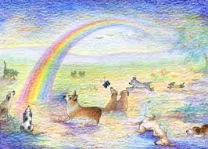

~Welcome to the Furever Friends site~
This is a page lovingly dedicated to all our beloved pets who had left the physical world... but who always remain in our hearts...
Although most tributes on our site are dedicated to dogs and cats, we welcome all types of animal companions... from the furry, to the feathery, scaly or even a little slimy... we understand how important they are to you and would love to hear your stories and memories about them...<3
We are a 100% non-profit organization, run by a small group of dedicated volunteers who are pet lovers themselves. All proceeds go to help fund the activites that we have for our support group, and also to help our independent animal rescuers or animal shelter. We work hard to maintain this site and related services as an important page and support group for people dealing with the loss of a beloved pet.
If you like our site and what we do, please consider making a donation to your local animal shelter to benefit another animal... perhaps in the name of your lost pet. This is a common practice in Buddhism, and is believed to bring good karma and blessings for our dearly departed.
Thank you, and may peace be with you and your beloved pets... :)